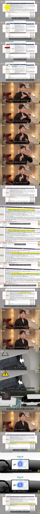
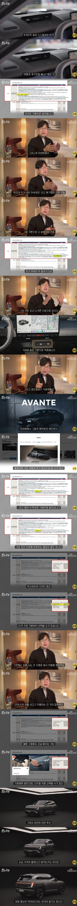
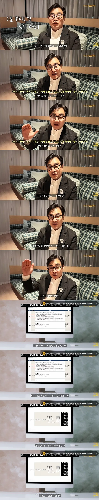

세단파여서 아반떼 풀체 기다렸는데 가격보고 바로 포기하고 쏘나타 보다가 투싼 풀체 이번에 나온거 보니
suv 함 경험해볼겸 가성비로 사볼까 생각중임 ㅇㅇ..
그만큼 잘나온듯?? 현대에서 가격 옵션 고민 많이한게 보여서 가성비로 나왔을때 사보는게 괜찮아보임
쏘나타 신차 느낌이 안나서 안끌렸는디 이번이 신차 느낌으로 플레오스도 경험해보고 suv가 나랑 맞는지 경험해보게 될듯
근데 아반떼 인스퍼로 샀으면 피눈물 날듯..
아반떼 인스퍼가 투싼 깡통이랑 옵션이 크게 차이가 안나는데 아반떼가 2백 비싼게 에러임. 기껏해야 천연가죽, 빌트인캠, 앰비언트라이트 정도? 누가 아반때사냐; 최소 100정도 인하해야할거같은데
엊그제 셀토스 계약햇는데 정신 나갈거같다... 여자+운전 왕초보+첫차.. 시그니처 트림에 안전옵션 다넣고 스타일 넣고 차값만 대략 3500인데 ㅅㅂ 지금이라도 노선 변경해야하나 뒤지게 고민됨 ㅠ
중고차 안사고 뭐해
이번에 이사하는데 목돈이 나가게되서.. 이사가는곳 교통이 너무 안좋아서 차는 필요한데 신차나 중고나 일부분 할부 껴야하는 상황이라 어쩔수가 없음 ㅠ
신차 살거면 계약 취소하고 하고 투싼가,,,H트림진짜 잘나옴
주변에 작년에 투싼 뽑은분한테 딜러 소개받아야겟다 하..
계약취소해 빨리 계약금 차 안나왓으면 돌려준다
그거사면호규여
딱 윤성로 말대로 3400에 계약해라 .하브면 더좋고
1000만원이상 손해볼거야 나중에팔때
이제 아반떼 구입자는 능지문제로 봐야..
현대가 욕먹으니까 좀 들어먹기는 하네
모델y때문에 위기인데 아이오닉v 들어올수도 없으니 들어처먹긴해야지
이번 투싼 가격이랑 옵션 배치는 ㄹㅇ 좀 잘햇다
이제 아이오닉9도 좀 해줘라...차좀 바꾸자
나도 아이오닉9 보고잇는디 법인경매로 바꾸려고ㅎㅎ
경매는 넘 어렵더라
자동차 유튜버 모카랑 키 작은 사람꺼는 진짜 못보겠더라. 하도 중국 찬양하니까
이번엔 ㄹㅇ 괜찮네 초반에 분명 찐빠 한번 낼테니까 좀 기다리다 들어가볼까
아반떼가 진짜 개병신이었네ㅋㅋ